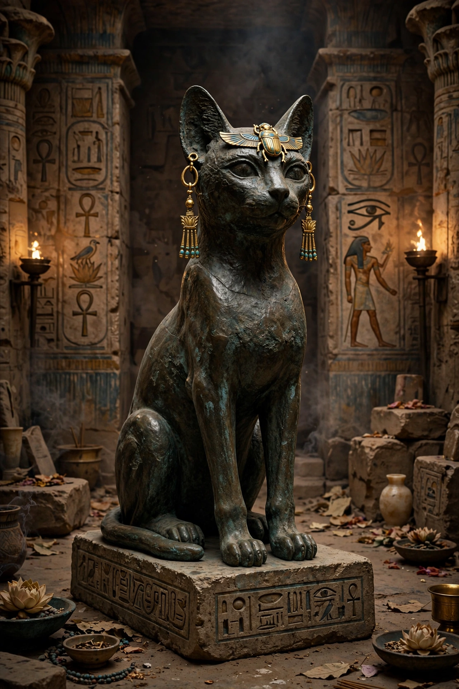

From Wikipedia, the free encyclopedia
| Bastet | |
|---|---|
| Affiliation | Egyptian mythology; goddess of home, fertility, childbirth and protection |
| Cult centre | Bubastis (Tell Basta) |
| Depicted as | Cat, or woman with a cat's head |
| Symbols | Cat; sistrum; basket |
| Counterpart form | Sekhmet (the fierce Eye of Ra) |

Bastet is the ancient Egyptian goddess of the home, fertility, women, childbirth and protection, depicted as a cat or as a woman with a cat's head. Centred at Bubastis in the Nile Delta, her cult was among the most beloved in Egypt: she guarded households against disease and evil spirits, oversaw perfume and festivity, and in her festival drew some of the largest crowds of the ancient world. Originally a lioness deity like her fierce counterpart Sekhmet, Bastet softened over the centuries as the domestic cat — which she came to embody — grew central to Egyptian life.
In the Old Kingdom Bastet appears as a lioness, a daughter and Eye of Ra who could be as dangerous as Sekhmet; the two goddesses came to be seen as two aspects of one power — the raging and the gentle Eye. As cats were domesticated and cherished in Egyptian homes (and mummified in their millions as offerings), Bastet's image settled into the cat: the famous Gayer-Anderson cat, a bronze of perfect poise with gold jewellery, is her classical form. She carries the sistrum, linking her to music, dance and joy, and a basket — perhaps for kittens, or for the offerings of her worshippers.
Herodotus describes the annual festival at Bubastis as Egypt's greatest: hundreds of thousands of pilgrims sailed to the city in boats, playing castanets and flutes, singing, drinking more wine (he says) than in all the rest of the year, and sacrificing at her great temple, which stood on an island of water in the city. Excavations at Tell Basta have recovered the temple's ruins and vast cat cemeteries. Bastet's popularity peaked in the Late Period, when Bubastis's local dynasty (the 22nd) ruled Egypt.
Egyptian mythology · Sekhmet · Ra · Anubis · Isis